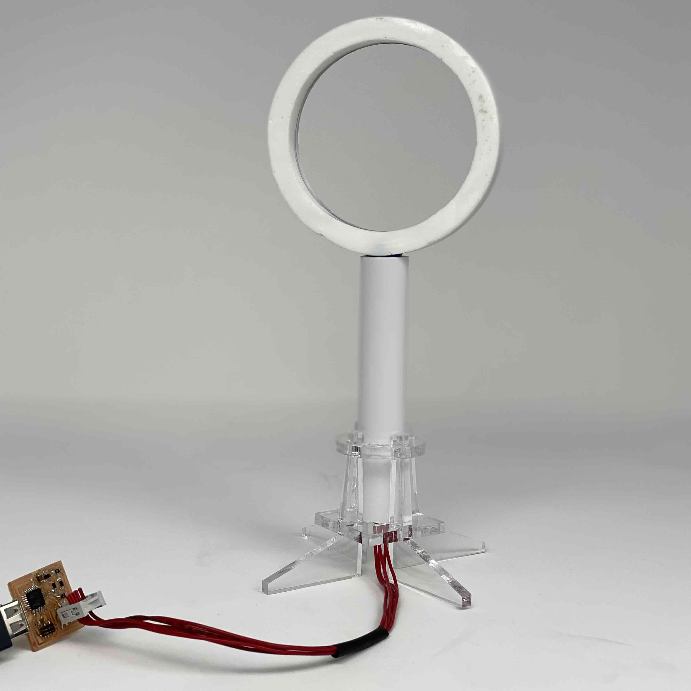

Jessica / Portfolio
Ideas made
physical.
Exploring mathematics, movement, and invention
through things I build.

Sensing / Physical prototyping
The Fab Hoop
Selective goal detection for quadball,
using magnetic induction.
The challenge
In quadball, players score by sending a ball through a hoop. An obstructed view can make a goal difficult to judge.
The approach
I built a hoop that detects a magnet embedded in the ball. As the ball passes through a wire coil, the changing magnetic flux produces an electrical signal that triggers LEDs.
The result
The prototype lights up when the magnetic ball passes through, while allowing other objects to cross without triggering the sensor.
01 Magnetic ball
02 Coil signal
03 LED feedback